Quarto Demo: Ferritin thresholds
Quarto is the new R Markdown
Quarto (by R Studio) enables you to weave together content and executable code into a finished document. Still based on Pandoc, still rendered by Knitr, very much same ideas and philosophies, but now tailored to a wider audience and with less emphasis on R. To learn more about Quarto see https://quarto.org.
Defining chunks
Instead of defining chunk behaviour in its initialization brackets, in Quarto documents (.qmd) we use the following notation:
Chunk notation
```{r}
#| label: examples-settings
#| code-summary: Chunk notation
#| warning: false
#| message: false
#| fig.align: center
#| code-fold: true
# etc.
```To achieve the rendering of the entire code block (with fences), we also used #| echo: fenced as a setting, but it itself does not get rendered. With echo: true we get the following:
Not fenced
# etc.Measuring ferritin for iron deficiency
The World Health Organization currently recommends a ferritin cut-off of <15 μg/L for iron deficiency in all subpopulations, except children under 5 and pregnant individuals after the first trimester. [1] Although these numbers were “updated” in 2020, WHO couldn’t find strong evidence for using ferritin as a good marker for iron stores. They still recommend it, as there is high likelihood of it being better than not using it.
In 2021, to conjure some sense into this, Mei et al. [2] (affl. CDC) attempted to tie ferritin into two different physiological measures: hemoglobin and soluble transferritin receptors (sTfR), both indicators of iron-deficient erythropoiesis (layman: “not enough iron to make red blood cells”). They seem to argue that if they can find a similar threshold value for both of these by looking at ferritin, they can “derive a physiological ferritin threshold for iron deficiency”. Their cohort consists of “apparently healthy” children and non-pregnant women (15-49 yo) recorded in the US National Health and Nutrition Examination Survey (NHANES). For the purposes of their study, “apparently healthy” means filtering out individuals based on CRP, white blood cell counts, and possible liver disease.
To find this threshold, they chose a restricted cubic spline model with 5 knots. They do not report testing other numbers of knots, nor varying knot positions. In their Supplement they explain that they used the rcs() function from the R package rms for this. We emailed them and they stated that they tested 4 and 5 knots, but because 5 knots returned a better \(R^2\), it was selected. We’re currently communicating with them, trying to see what happens when the number of knots is increased.
In this report we’ll focus on apparently healthy non-pregnant women (by recorded gender, pregnancy status and blood donor eligibility criteria available in the Health 2000 cohort), so here are the results for women in Mei et al. (reproduced without permission!):
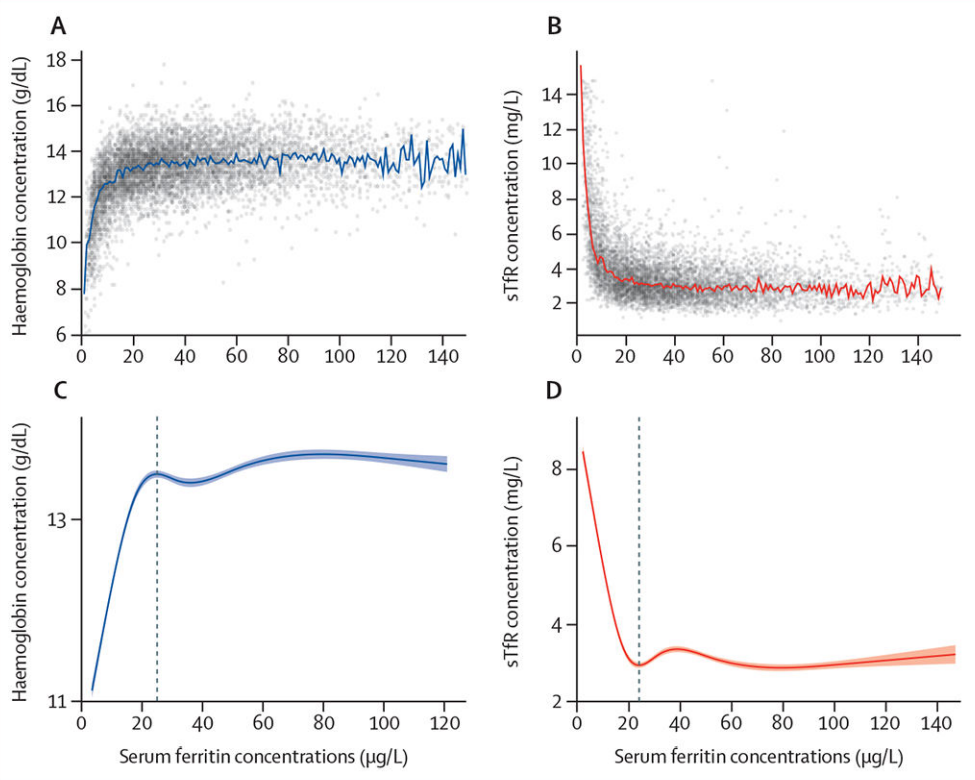 Mei et al. determine the threshold by computing the zero derivatives of the resulting fits, implicitly arguing that the “plateau before the fall/rise” constitutes as the de facto threshold. The threshold generated this way are 25.2 μg/L and 24.0 μg/L for hemoglobin and sTfR, respectively. These vary somewhat when stratifying by age. It is however immediately interesting that these thresholds settle around the same number for both hemoglobin and sTfR, and that they defy the visual inspection of the scatter plot / median line, which points closer to the WHO threshold.
Later, in 2022, they replicated their results with Retrovirus Epidemiology Donor Study-II Donor Iron Status Evaluation (REDS-RISE) blood donor data (this time Addo et al.). [3]
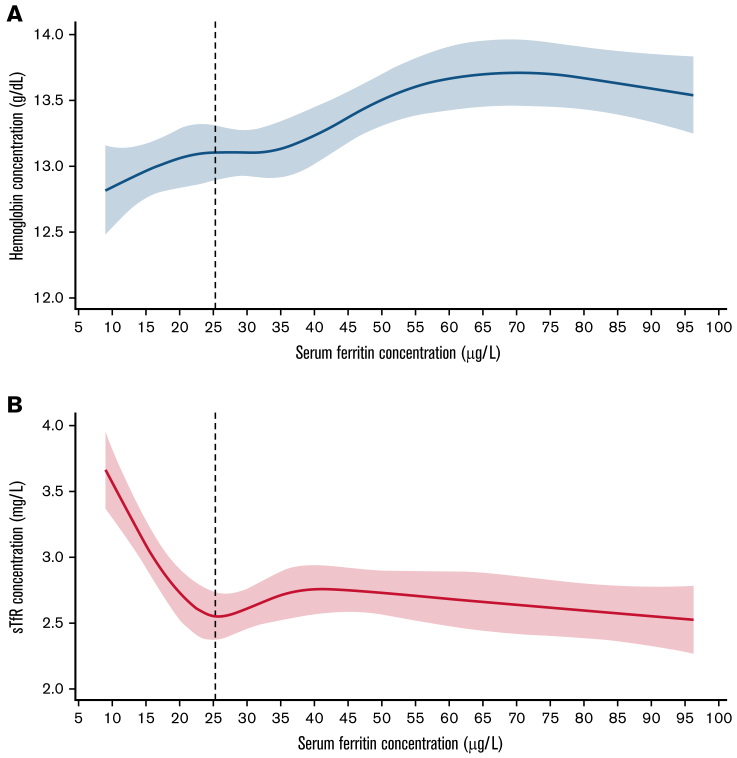
Replication
We’re now left with a curiosity: what happens with other knot numbers? If we were to try to replicate this, we’d be interested in testing fits with more/less knots, or possibly entirely other approaches. We only have hemoglobin and ferritin to work with in the Health 200 cohort, but and hemoglobin, ferritin and sTfR in the FinDonor cohort. We’ll start with H2000.
H2000 data visualized
Figure 1 shows the general relationship between haemoglobin and ferritin in the Health 2000 cohort. We can see that for a very short while, an increase in ferritin corresponds to a very strong increase in haemoglobin, after which it has no discernible effect. Here, we are interested in locating “with quantifiable confidence” the inflection point of this phenomenon.
Plotting code
ggplot(data = apparently_healthy, aes(x = Ferritin, y = Hemoglobin)) +
geom_point(alpha = .3) +
geom_smooth(method = "gam", formula = y ~ s(x, bs = "cr")) +
geom_vline(xintercept = 15, linetype = "dashed") +
geom_vline(xintercept = 25, linetype = "dashed") +
annotate(geom = "text", label = "15 ug/L", x = 7, y = 170) +
annotate(geom = "text", label = "25 ug/L", x = 34, y = 170) +
xlim(c(0, 100)) +
theme_minimal() +
labs(title = "When will hemogobin start to fall off?",
subtitle = "WHO: maybe at 15 ug/L. Mei & Addo et al.: 25 ug/L.",
x = "Ferritin (μg/L)",
y = "Hemoglobin (g/L)")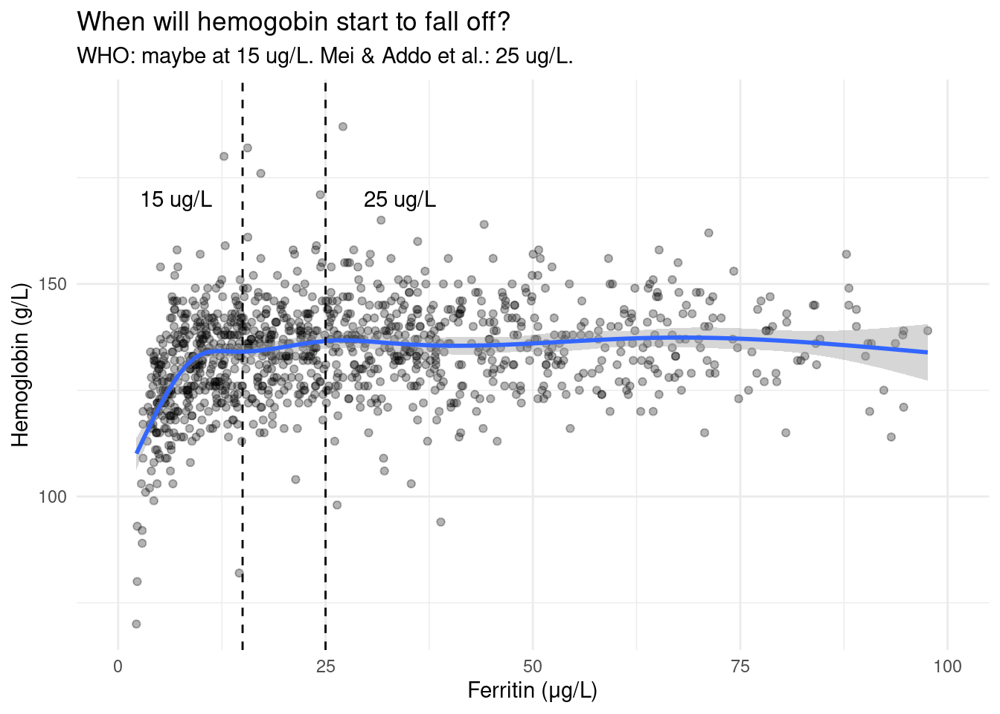
For plotting, you can set a caption with fig-cap, figure height and width with fig-height and fig-width, and alignment with fig-align (when knitting into HTML and LaTeX, Knitr will attempt to center the figure by default). You can cross-reference a figure using @fig-* notation, assuming you are also using a corresponding label: fig-*!
These are callouts, and they come in a handful of flavors: note, tip, warning, caution, and important. You build them with the following syntax: :::{.callout-note/tip/warning/caution/important} ## Callout heading Content :::
Fitting restricted cubic splines | Health 2000
We first fit restricted cubic spline models with 3 to 12 knots, to see how their accuracies behave as measured by AIC.
Fitting with knots from 3 to 12
hb3 <- ols(Hemoglobin ~ rcs(Ferritin, 3),
data = apparently_healthy,
x = TRUE,
y = TRUE)
hb4 <- ols(Hemoglobin ~ rcs(Ferritin, 4),
data = apparently_healthy,
x = TRUE,
y = TRUE)
hb5 <- ols(Hemoglobin ~ rcs(Ferritin, 5),
data = apparently_healthy,
x = TRUE,
y = TRUE)
hb6 <- ols(Hemoglobin ~ rcs(Ferritin, 6),
data = apparently_healthy,
x = TRUE,
y = TRUE)
hb7 <- ols(Hemoglobin ~ rcs(Ferritin, 7),
data = apparently_healthy,
x = TRUE,
y = TRUE)
hb8 <- ols(Hemoglobin ~ rcs(Ferritin, 8),
data = apparently_healthy,
x = TRUE,
y = TRUE)
hb9 <- ols(Hemoglobin ~ rcs(Ferritin, 9),
data = apparently_healthy,
x = TRUE,
y = TRUE)
hb10 <- ols(Hemoglobin ~ rcs(Ferritin, 10),
data = apparently_healthy,
x = TRUE,
y = TRUE)
hb11 <- ols(Hemoglobin ~ rcs(Ferritin, 11),
data = apparently_healthy,
x = TRUE,
y = TRUE)
hb12 <- ols(Hemoglobin ~ rcs(Ferritin, 12),
data = apparently_healthy,
x = TRUE,
y = TRUE)To properly compare model AICs against each other, we rely on theory or a rule of thumb, outlined e.g. by Burnham and Anderson (2004). [4] Comparing AICs is best done by comparing their differences: \[ \Delta_i = \text{AIC}_i - \text{AIC}_{min}. \] The rule of thumb goes as follows:
- \(\Delta_i < 2\): very probable that the \(i\)th model describes the data as well as the model that minimizes AIC.
- \(2 < \Delta_i < 4\): strong evidence that the \(i\)th model describes the data as well as the model that minimizes AIC.
- \(4 < \Delta_i < 7\): little evidence
- \(\Delta_i > 10\): no contest
Leveraging this logic, we can also compute the relative probability that the \(i\)th method is actually the one that minimizes AIC: \[ p_i = e^{\frac{-\Delta_i}{2}}. \] Knowing this, we may now compute the AIC differences and easily demonstrate the effect of knot numbers on the model performance.
Computing the AICs
Hb_AIC <- c(AIC(hb3),
AIC(hb4),
AIC(hb5),
AIC(hb6),
AIC(hb7),
AIC(hb8),
AIC(hb9),
AIC(hb10),
AIC(hb11),
AIC(hb12))
Hb_AIC_min <- min(Hb_AIC)
Hb_AIC_mindiff <- Hb_AIC - Hb_AIC_min
knots <- 3:12
probs <- exp(-Hb_AIC_mindiff / 2) * 100
hb_AIC_df <- data.frame(knots = knots,
AIC_delta = Hb_AIC_mindiff,
probs = probs)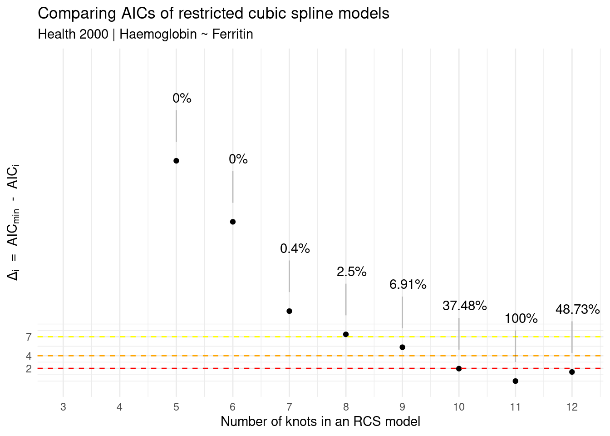
Figure 2 indicates that the AIC is minimized at 11 knots, after which it starts increasing again. Models with 10 and 12 knots are also very probable candidates for the actual AIC minimizing model, and we may not be able to reliably choose between them. If we set a confidence level of 5%, we’ll also have to include the 9 knot model. Let’s take a look at them.
Plotting fits
ggplot(Predict(hb9)) +
geom_vline(xintercept = 10.2, linetype = "dashed") +
annotate(geom = "text", label = "10.2 μg/L", x = 17, y = 140) +
annotate(
geom = "text",
label = paste("AIC:", as.integer(AIC(hb9))),
x = 110,
y = 144
) +
scale_x_continuous(breaks = c(0, 20, 40, 60, 80, 100, 120),
limits = c(0, 120)) +
theme_minimal() +
labs(
title = "Restricted cubic spline, 9 knots",
subtitle = "Apparently healthy non-pregnant women 20-49 y.o.",
x = "Serum ferritin concentrations (μg/L)",
y = "Haemoglobin concentration (g/L)"
)
ggplot(Predict(hb10)) +
geom_vline(xintercept = 9.2, linetype = "dashed") +
annotate(geom = "text", label = "9.2 μg/L", x = 16, y = 140) +
annotate(
geom = "text",
label = paste("AIC:", as.integer(AIC(hb10))),
x = 110,
y = 144
) +
scale_x_continuous(breaks = c(0, 20, 40, 60, 80, 100, 120),
limits = c(0, 120)) +
theme_minimal() +
labs(
title = "Restricted cubic spline, 10 knots",
subtitle = "Apparently healthy non-pregnant women 20-49 y.o.",
x = "Serum ferritin concentrations (μg/L)",
y = "Haemoglobin concentration (g/L)"
)
ggplot(Predict(hb11)) +
geom_vline(xintercept = 8.5, linetype = "dashed") +
annotate(geom = "text", label = "8.5 μg/L", x = 15, y = 140) +
annotate(
geom = "text",
label = paste("AIC:", as.integer(AIC(hb11))),
x = 110,
y = 144
) +
scale_x_continuous(breaks = c(0, 20, 40, 60, 80, 100, 120),
limits = c(0, 120)) +
theme_minimal() +
labs(
title = "Restricted cubic spline, 11 knots",
subtitle = "Apparently healthy non-pregnant women 20-49 y.o.",
x = "Serum ferritin concentrations (μg/L)",
y = "Haemoglobin concentration (g/L)"
)
ggplot(Predict(hb12)) +
geom_vline(xintercept = 8.3, linetype = "dashed") +
annotate(geom = "text", label = "8.3 μg/L", x = 14.8, y = 140) +
annotate(
geom = "text",
label = paste("AIC:", as.integer(AIC(hb12))),
x = 110,
y = 144
) +
scale_x_continuous(breaks = c(0, 20, 40, 60, 80, 100, 120),
limits = c(0, 120)) +
theme_minimal() +
labs(
title = "Restricted cubic spline, 12 knots",
subtitle = "Apparently healthy non-pregnant women 20-49 y.o.",
x = "Serum ferritin concentrations (μg/L)",
y = "Haemoglobin concentration (g/L)"
)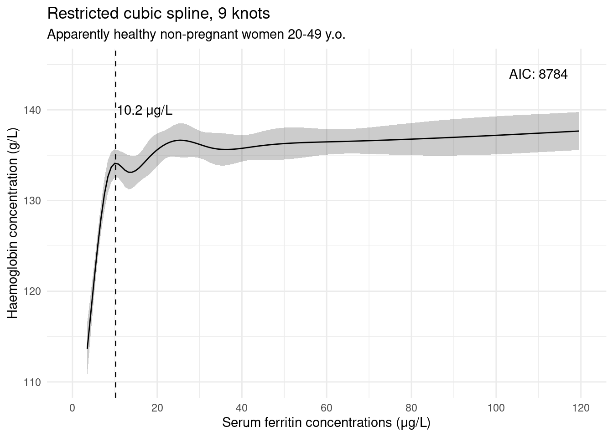
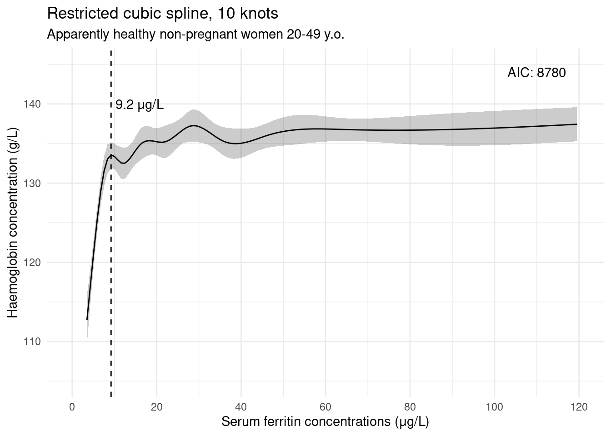
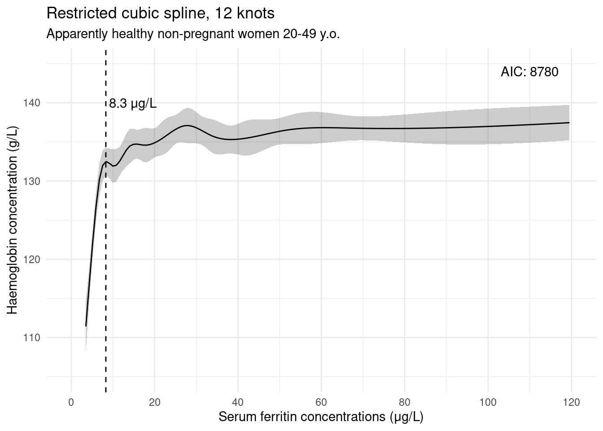
Figure 3 (a, b, c, and d) clearly show that the inflection point or “plateau” we’re looking for (by finding the zero derivatives of this function!) shifts closer and closer to around 8 μg/L, as we move up in the number of knots. This result is somewhat striking for two reasons:
- the ferritin thresholds derived this way are “way” below the WHO recommendation of 15 μg/L;
- there is substantial movement in the placement of the inflection point depending on the number of knots, suggesting that this might also happen the NHANES data if tested.
But we do have another cohort and another variable to test this with. The FinDonor cohort also includes the soluble transferrin receptor measurements for the participants, so we’ll be able to check if we can achieve a matching threshold between haemoglobin and sTfR.
FinDonor data visualized
Plotting data
ggplot(data = donors_oi, aes(x = Ferritin, y = Hb)) +
geom_point(alpha = .3) +
geom_smooth(method = "gam", formula = y ~ s(x, bs = "cr")) +
geom_vline(xintercept = 15, linetype = "dashed") +
geom_vline(xintercept = 25, linetype = "dashed") +
annotate(geom = "text", label = "15 ug/L", x = 7, y = 170) +
annotate(geom = "text", label = "25 ug/L", x = 34, y = 170) +
xlim(c(0, 100)) +
theme_minimal() +
labs(title = "When will hemogobin start to fall off?",
subtitle = "WHO: maybe at 15 ug/L. Mei & Addo et al.: 25 ug/L.",
x = "Ferritin (μg/L)",
y = "Hemoglobin (g/L)")
ggplot(data = donors_oi, aes(x = Ferritin, y = TransferrinR)) +
geom_point(alpha = .3) +
geom_smooth(method = "gam", formula = y ~ s(x, bs = "cr")) +
geom_vline(xintercept = 15, linetype = "dashed") +
geom_vline(xintercept = 25, linetype = "dashed") +
annotate(geom = "text", label = "15 ug/L", x = 7, y = 10) +
annotate(geom = "text", label = "25 ug/L", x = 34, y = 10) +
xlim(c(0, 100)) +
theme_minimal() +
labs(title = "When will sTfR start to rise?",
subtitle = "WHO: maybe at 15 ug/L. Mei & Addo et al.: 25 ug/L.",
x = "Ferritin (μg/L)",
y = "sTfR (mg/L)")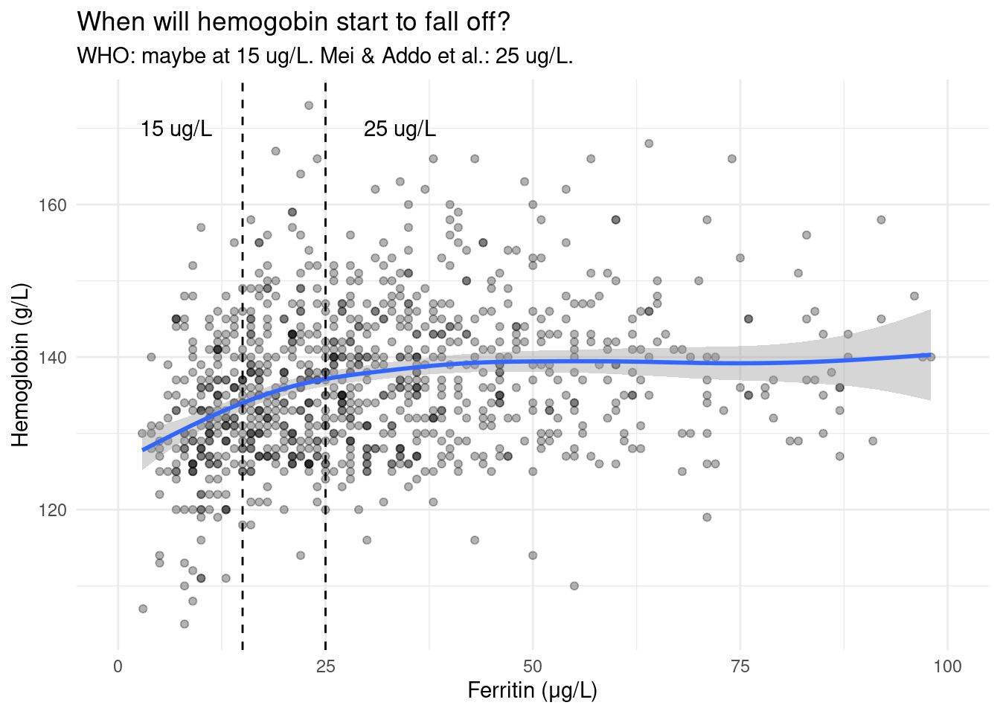
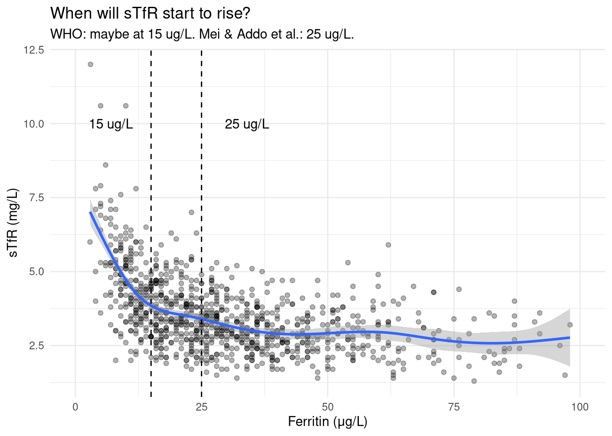
The inflection points for both haemoglobin and sTfR are not as clear as with haemoglobin in the Health 200 cohort. This is probably a donor selection process effect.
Fitting restricted cubic splines | FinDonor
Fitting with knots from 3 to 12 | Haemoglobin
hb3_fd <- ols(Hb ~ rcs(Ferritin, 3),
data = donors_oi,
x = TRUE,
y = TRUE)
hb4_fd <- ols(Hb ~ rcs(Ferritin, 4),
data = donors_oi,
x = TRUE,
y = TRUE)
hb5_fd <- ols(Hb ~ rcs(Ferritin, 5),
data = donors_oi,
x = TRUE,
y = TRUE)
hb6_fd <- ols(Hb ~ rcs(Ferritin, 6),
data = donors_oi,
x = TRUE,
y = TRUE)
hb7_fd <- ols(Hb ~ rcs(Ferritin, 7),
data = donors_oi,
x = TRUE,
y = TRUE)
hb8_fd <- ols(Hb ~ rcs(Ferritin, 8),
data = donors_oi,
x = TRUE,
y = TRUE)
hb9_fd <- ols(Hb ~ rcs(Ferritin, 9),
data = donors_oi,
x = TRUE,
y = TRUE)
hb10_fd <- ols(Hb ~ rcs(Ferritin, 10),
data = donors_oi,
x = TRUE,
y = TRUE)
hb11_fd <- ols(Hb ~ rcs(Ferritin, 11),
data = donors_oi,
x = TRUE,
y = TRUE)
hb12_fd <- ols(Hb ~ rcs(Ferritin, 12),
data = donors_oi,
x = TRUE,
y = TRUE)Fitting with knots from 3 to 12 | sTfR
stfr3 <- ols(TransferrinR ~ rcs(Ferritin, 3),
data = donors_oi,
x = TRUE,
y = TRUE)
stfr4 <- ols(TransferrinR ~ rcs(Ferritin, 4),
data = donors_oi,
x = TRUE,
y = TRUE)
stfr5 <- ols(TransferrinR ~ rcs(Ferritin, 5),
data = donors_oi,
x = TRUE,
y = TRUE)
stfr6 <- ols(TransferrinR ~ rcs(Ferritin, 6),
data = donors_oi,
x = TRUE,
y = TRUE)
stfr7 <- ols(TransferrinR ~ rcs(Ferritin, 7),
data = donors_oi,
x = TRUE,
y = TRUE)
stfr8 <- ols(TransferrinR ~ rcs(Ferritin, 8),
data = donors_oi,
x = TRUE,
y = TRUE)
stfr9 <- ols(TransferrinR ~ rcs(Ferritin, 9),
data = donors_oi,
x = TRUE,
y = TRUE)
stfr10 <- ols(TransferrinR ~ rcs(Ferritin, 10),
data = donors_oi,
x = TRUE,
y = TRUE)
stfr11 <- ols(TransferrinR ~ rcs(Ferritin, 11),
data = donors_oi,
x = TRUE,
y = TRUE)
stfr12 <- ols(TransferrinR ~ rcs(Ferritin, 12),
data = donors_oi,
x = TRUE,
y = TRUE)Computing the AICs | Haemoglobin
Hb_AIC_fd <- c(AIC(hb3_fd),
AIC(hb4_fd),
AIC(hb5_fd),
AIC(hb6_fd),
AIC(hb7_fd),
AIC(hb8_fd),
AIC(hb9_fd),
AIC(hb10_fd),
AIC(hb11_fd),
AIC(hb12_fd))
Hb_AIC_min_fd <- min(Hb_AIC_fd)
Hb_AIC_mindiff_fd <- Hb_AIC_fd - Hb_AIC_min_fd
knots <- 3:12
probs <- exp(-Hb_AIC_mindiff_fd / 2) * 100
hb_AIC_df_fd <- data.frame(knots = knots,
AIC_delta = Hb_AIC_mindiff_fd,
probs = probs)Computing the AICs | sTfR
stfr_AIC <- c(AIC(stfr3),
AIC(stfr4),
AIC(stfr5),
AIC(stfr6),
AIC(stfr7),
AIC(stfr8),
AIC(stfr9),
AIC(stfr10),
AIC(stfr11),
AIC(stfr12))
stfr_AIC_min <- min(stfr_AIC)
stfr_AIC_mindiff <- stfr_AIC - stfr_AIC_min
knots <- 3:12
probs <- exp(-stfr_AIC_mindiff / 2) * 100
stfr_AIC_df <- data.frame(knots = knots,
AIC_delta = stfr_AIC_mindiff,
probs = probs)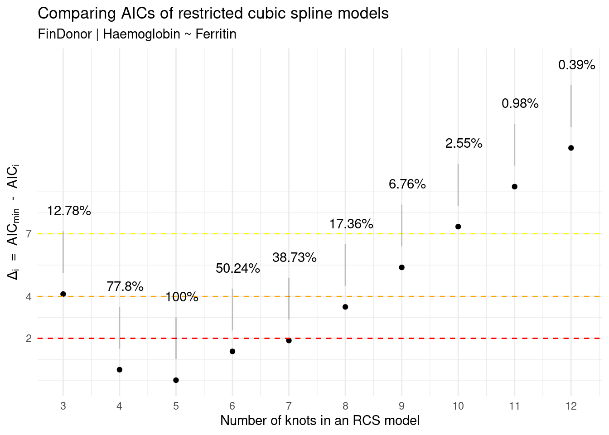
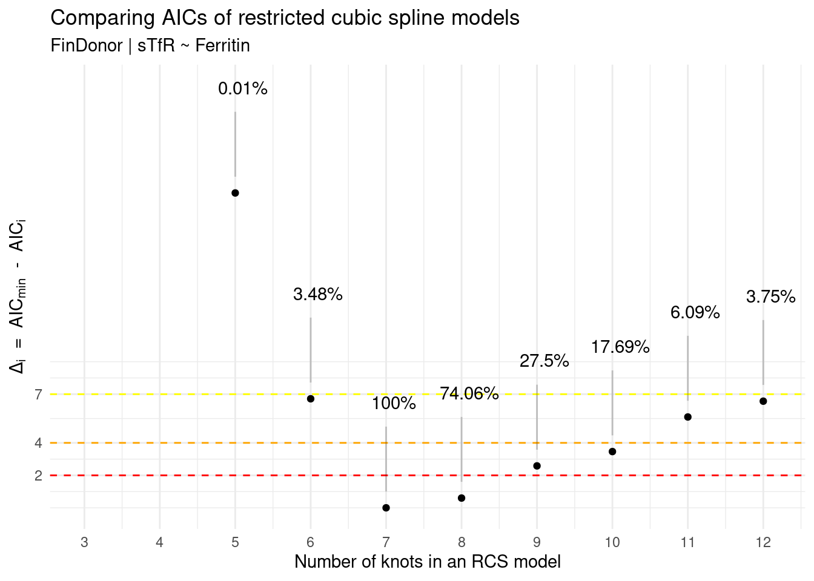
Figure 5 reveals that the AIC is minimized at different knots for haemoglobin and sTfR, 5 and 7, respectively. However, the haemoglobin 7 knot model has still quite a lot of support for it, being at 39% chance of being the AIC minimizing model. The evidence gets weaker fast, though, as we move up the knot ladder.
We probably shouldn’t be encouraged to move upwards the model complexity curve just because we can credibly match knot numbers for two different iron deficiency indicators, but let’s see what the 7 knot models look like.
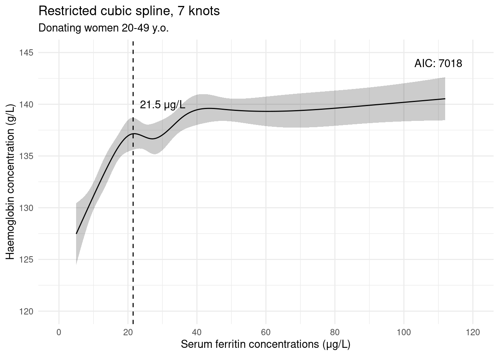
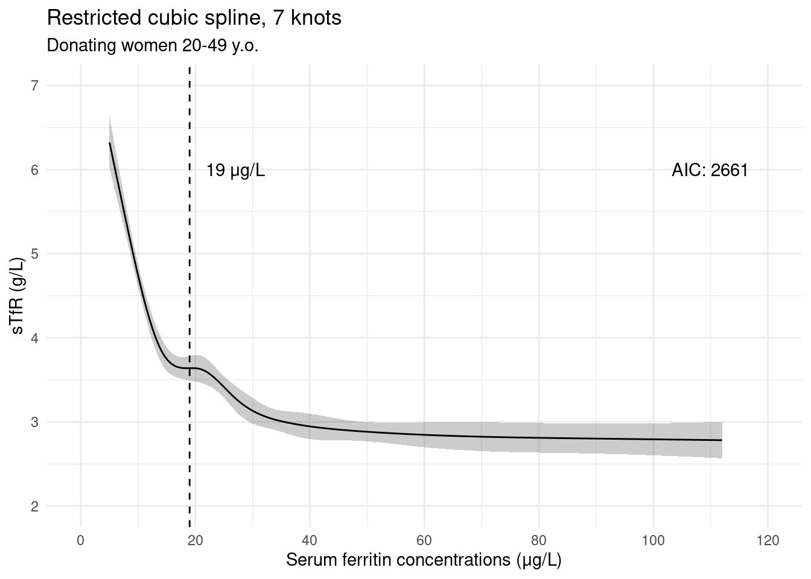
It’s encouraging that the threshold is around the same ballpark for both of these at knot number 7. However, let us not forget the reality of the matter, there are other viable fits available:
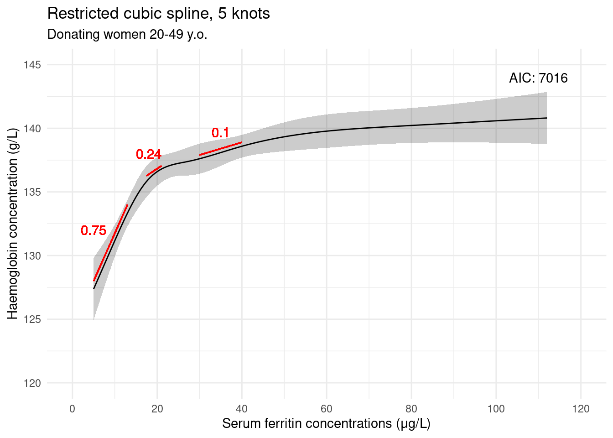
Figure 7 reveals that there are no zero derivatives within the range of interest for haemoglobin with 5 knots! There still is a turning point, but it can’t be found via the zero of the first derivative of this function. Looking at the derivatives at select x (the estimates here are visual), we can see that the change in the derivative is fastest somewhere between 15 and 20 μg/L.
This is isn’t the only fit with no plateau at the inflection point. Take a look at the sTfR 9 knot model:
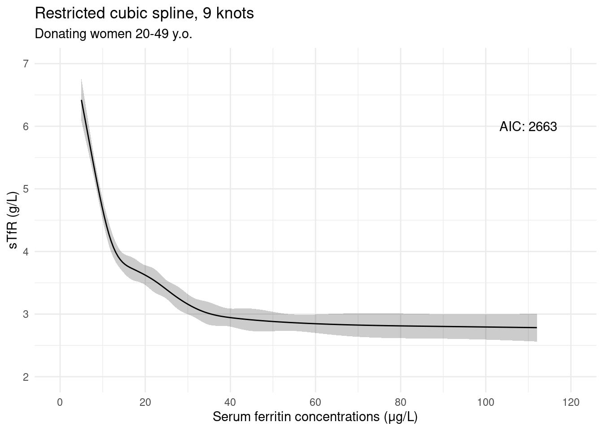
Summary
We’re currently in talks with the original authors of these cubic spline derived thresholds, but the communication has not been very clear. We sent them our code to run this week, but have yet to heard from them.
The main issue here is that if we suppose that there is a piecewise linear relationship between markers for iron-deficient erythropoiesis and serum ferritin levels, the whole idea of a zero derivative plateau makes no sense and raises the question of it being an artifact of the cubic spline model. We only expect to see a range where there is an effect, and a subsequent range where the effect disappears. Quantifying the behaviour of the derivative at the inflection point in a way that would be of use to anyone is much more difficult. Furthermore, different model specifications will position the inflection point differently, and we may want to instead distribut-ize the model parameters and extract the inflection points from those specifications that lie at the boundaries of our credibility intervals. This would require Bayesian modeling, an area I’m currently researching for this.
References
- World Health Organization. (2020). WHO guideline on use of ferritin concentrations to assess iron status in populations. World Health Organization. ISBN: 978-92-4-000012-4
- Mei Z, Addo OY, Jefferds ME, Sharma AJ, Flores-Ayala RC, Brittenham GM. Physiologically based serum ferritin thresholds for iron deficiency in children and non-pregnant women: a US National Health and Nutrition Examination Surveys (NHANES) serial cross-sectional study. The Lancet Haematology. 2021;8(8):e572-e582. doi:10.1016/S2352-3026(21)00168-X
- Addo OY, Mei Z, Hod EA, et al. Physiologically based serum ferritin thresholds for iron deficiency in women of reproductive age who are blood donors. Blood Advances. 2022;6(12):3661-3665. doi:10.1182/bloodadvances.2022007066
- Burnham KP, Anderson DR. Multimodel inference: understanding AIC and BIC in model selection. Sociological methods & research. 2004;33(2):261-304. doi:10.1177/0049124104268644